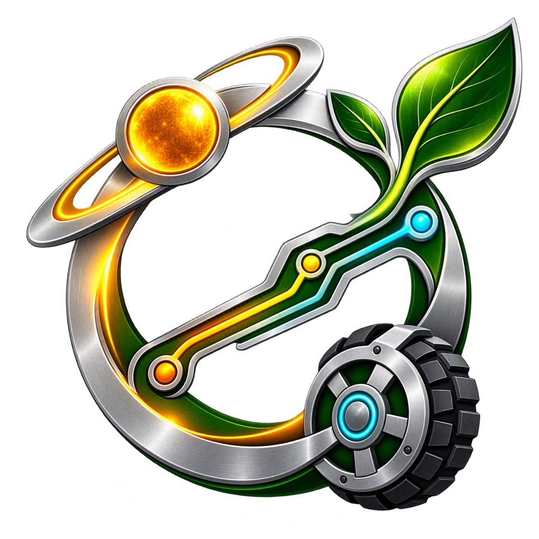
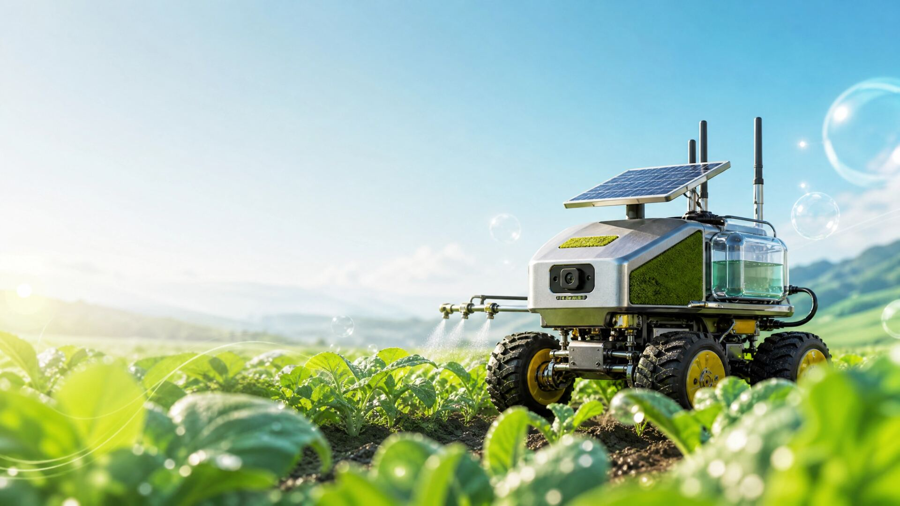
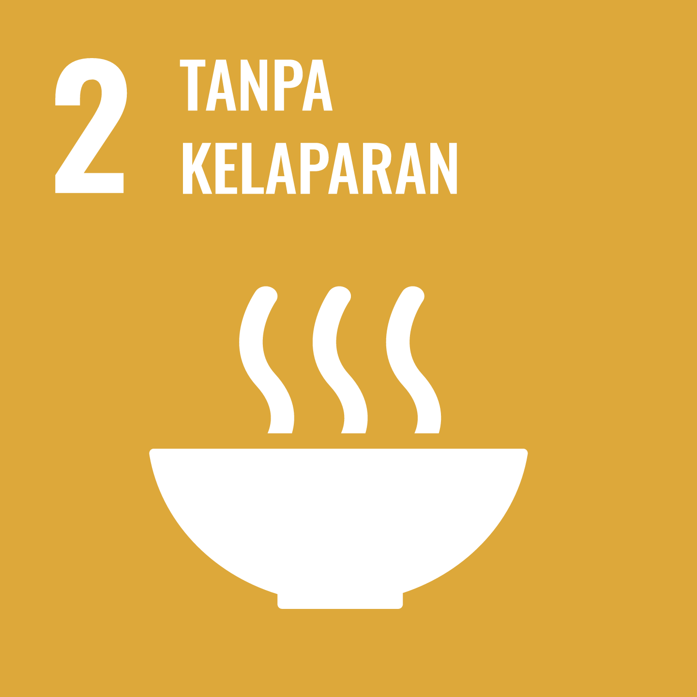
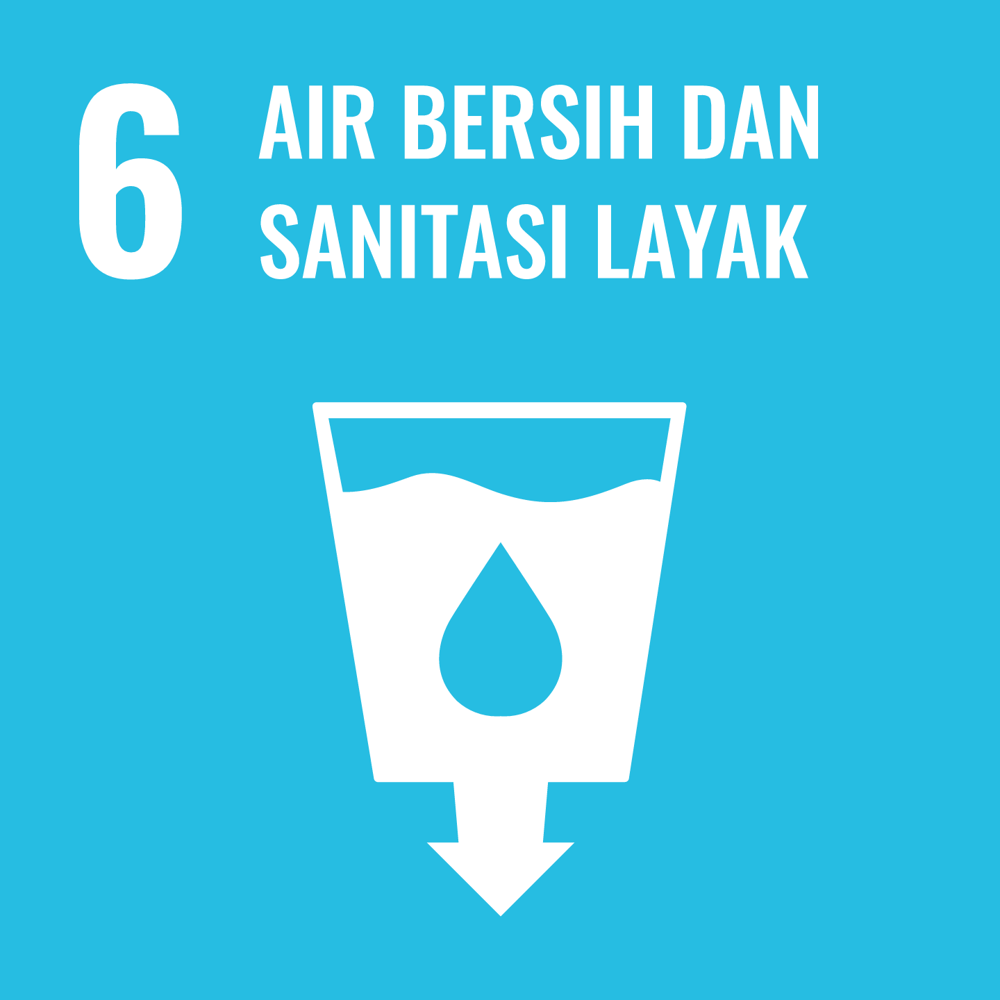
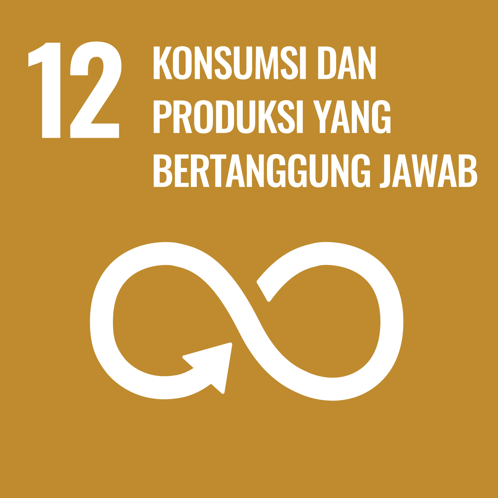
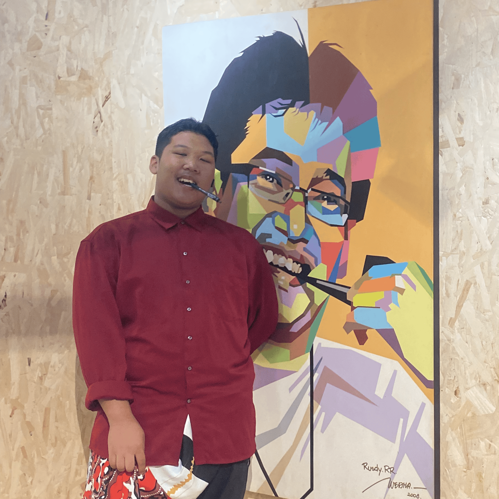

Daya Portabel
Baterai kotak 9V atau powerbank isi ulang menyuplai rover, sehingga bisa dipakai di lahan tanpa kabel listrik.

Rover penyiram tanaman kendali jarak jauh lewat aplikasi mBot dengan telemetri lahan real-time via VeritasNode
JMC 2026 · IRC 44 Jakarta Timur
Sweet Sandy Coast
SupaBuppa
AgriVeritas adalah rover pertanian yang dikendalikan operator lewat aplikasi mBot. Digerakkan Makeblock mCore V1.5 dan empat motor DC TT, robot ini dibawa ke tanaman dari smartphone, lalu pompa airnya dinyalakan lewat Arduino Nano untuk menyiram tepat di titik yang dipilih. Sensor HC-SR04 membaca jarak ke rintangan dan dibaca langsung oleh Arduino Nano, sementara modul tambahan VeritasNode (ESP32 + probe kelembapan tanah) mengirim data lahan ke dashboard AgriCloud:V. Dayanya dari baterai kotak 9V atau powerbank isi ulang.

Bodi rover berupa boks hitam yang menampung modul elektronik, dengan sensor ultrasonik di bagian depan atas. Empat roda bermotor DC TT dipasang pada kaki pipa siku yang direkatkan dan diikat kabel ties, sehingga bodi terangkat dari tanah dan tetap ringkas untuk dikemudikan lewat aplikasi mBot.
Baterai kotak 9V atau powerbank isi ulang menyuplai rover, sehingga bisa dipakai di lahan tanpa kabel listrik.
Operator mengemudikan rover dari smartphone, sementara Arduino Nano menyalakan pompa dan membaca HC-SR04 untuk jarak ke rintangan di depan.
Modul VeritasNode (ESP32 + probe tanah) mengirim data kelembapan tanah ke dashboard AgriCloud:V secara real-time untuk membantu operator memutuskan kapan perlu menyiram.
AgriVeritas dirancang untuk membantu penyiraman lahan lebih tepat sasaran dan hemat air lewat robot yang dikendalikan dari aplikasi.

Operator dapat menyiram tepat di tanaman yang membutuhkan, membantu menjaga hasil panen tetap optimal dan mendukung ketahanan pangan lokal.

Data sensor kelembapan tanah membantu operator menyiram secukupnya saja, sehingga air tidak terbuang dibanding menyiram tanpa acuan.

Powerbank isi ulang mengurangi limbah baterai sekali pakai, dan penyiraman yang terukur mengurangi pemborosan air.
Operator. Rover tidak menyiram otomatis: perintah pompa diteruskan dari aplikasi mBot ke Arduino Nano yang mengendalikan pompa. Sebagai acuan, probe soil moisture pada VeritasNode membaca kadar air tanah dan hasilnya tampil di dashboard AgriCloud:V.
Rover memakai baterai kotak 9V (alkaline) atau powerbank isi ulang. Baterai 9V praktis sebagai sumber sekali pakai, sedangkan powerbank bisa diisi ulang dan dipakai berkali-kali.
Rover dikemudikan manual lewat aplikasi mBot. Sensor ultrasonik HC-SR04 dibaca oleh Arduino Nano untuk mengukur jarak ke halangan di depan rover sebagai acuan operator agar tanaman muda tetap aman.
Modul VeritasNode (ESP32 + probe soil moisture) mengirim data kelembapan tanah secara berkala lewat WiFi agar petani dapat memantau kondisi lahan dari jarak jauh melalui dashboard AgriCloud:V.
Diagram alur daya dan sinyal yang menghubungkan sensor, kontroler, dan aktuator inti pada AgriVeritas. Klik simpul untuk melihat detail.
Spesifikasi teknis setiap modul yang membangun sistem inti AgriVeritas.
Tonton video demonstrasi lapangan AgriVeritas, lalu lihat bagaimana kondisi tanah memengaruhi pembacaan dashboard IoT VeritasNode.
Operator menghubungkan smartphone ke mCore V1.5 lewat Bluetooth, lalu mengemudikan rover menuju area tanaman menggunakan aplikasi mBot.
Operator sendiri yang menghentikan rover di dekat tanaman yang ingin dirawat, dibantu pembacaan jarak dari sensor ultrasonik HC-SR04 yang diproses oleh Arduino Nano.
Probe soil moisture pada modul VeritasNode membaca kadar air di sekitar perakaran dan hasilnya tampil di dashboard AgriCloud:V sebagai acuan operator.
Jika tanah terbaca kering, operator menyalakan pompa lewat aplikasi mBot, yang diteruskan ke Arduino Nano. Air dialirkan dari tangki dan disemprotkan lewat nozzle, lalu pompa dimatikan saat tanah sudah cukup basah.
Data kelembapan tanah dikirim nirkabel lewat ESP32 pada VeritasNode ke dashboard AgriCloud:V di smartphone, sehingga hasil penyiraman langsung terpantau.
Dua pikiran di balik rancang bangun AgriVeritas.

Bertanggung jawab atas arsitektur elektronik, integrasi sensor, dan perangkat keras Rover AgriVeritas.
Mengembangkan logika kendali, dashboard telemetri, dan konektivitas cloud proyek ini.